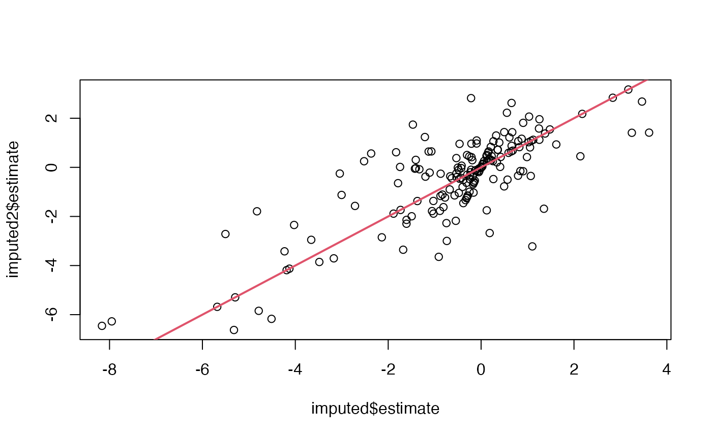
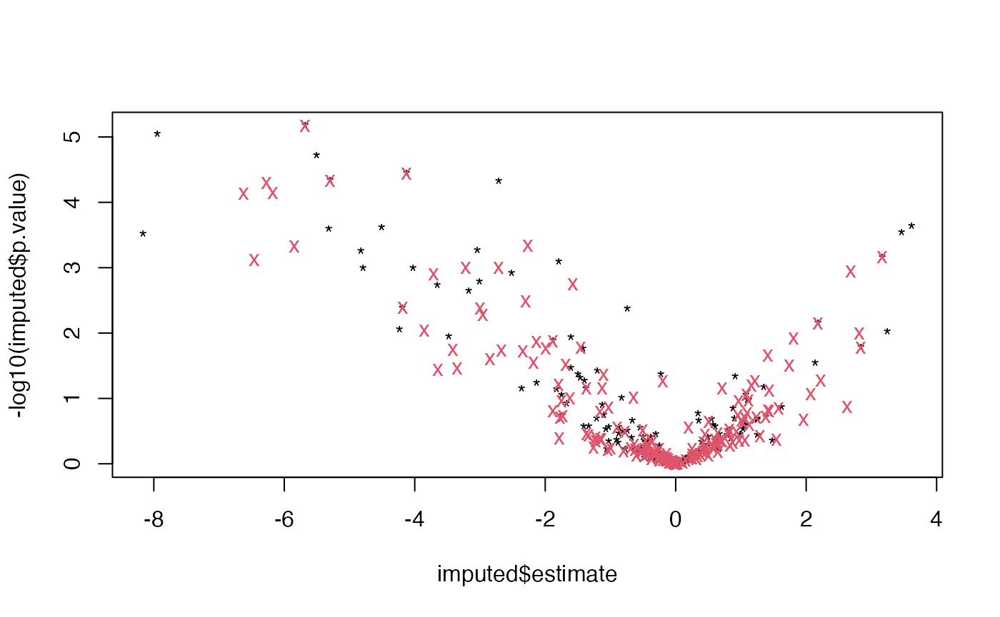

alternatively use
dd <- prolfqua::sim_lfq_data_protein_config(Nprot = 100,weight_missing = 2)## creating sampleName from fileName column## completing cases## [1] 552
Contrasts <- c("dilution.b-a" = "group_A - group_B", "dilution.c-e" = "group_A - group_Ctrl")
mh1 <- prolfqua::MissingHelpers$new(dd$data, dd$config, prob = 0.5,weighted = TRUE)
imputed <- mh1$get_contrasts(Contrasts = Contrasts)## [1] "group_"## completing cases## dilution.b-a=group_A - group_B## dilution.c-e=group_A - group_Ctrl## dilution.b-a=group_A - group_B## dilution.c-e=group_A - group_Ctrl## dilution.b-a=group_A - group_B## dilution.c-e=group_A - group_Ctrl
mh2 <- prolfqua::MissingHelpers$new(dd$data, dd$config, prob = 0.5,weighted = FALSE)
imputed2 <- mh2$get_contrasts(Contrasts = Contrasts)## [1] "group_"## completing cases## dilution.b-a=group_A - group_B## dilution.c-e=group_A - group_Ctrl## dilution.b-a=group_A - group_B## dilution.c-e=group_A - group_Ctrl## dilution.b-a=group_A - group_B## dilution.c-e=group_A - group_Ctrl
mh1$get_LOD()## 50%
## 18.13636
plot( imputed$estimate, -log10(imputed$p.value), pch = "*" )
points(imputed2$estimate, -log10(imputed2$p.value), col = 2, pch = "x")
Model with missing data
modelName <- "f_condtion_r_peptide"
formula_Protein <-
prolfqua::strategy_lm("abundance ~ group_",
model_name = modelName)
mod <- prolfqua::build_model(
dd$data,
formula_Protein,
modelName = modelName,
subject_Id = dd$config$table$hierarchy_keys_depth())## Warning: There were 11 warnings in `dplyr::mutate()`.
## The first warning was:
## ℹ In argument: `linear_model = purrr::map(data, model_strategy$model_fun, pb =
## pb)`.
## ℹ In group 18: `protein_Id = "DoWup2~8058"`.
## Caused by warning in `value[[3L]]()`:
## ! WARN :Error in `contrasts<-`(`*tmp*`, value = contr.funs[1 + isOF[nn]]): contrasts can be applied only to factors with 2 or more levels
## ℹ Run `dplyr::last_dplyr_warnings()` to see the 10 remaining warnings.## Joining with `by = join_by(protein_Id)`
mod$modelDF## # A tibble: 100 × 9
## # Groups: protein_Id [100]
## protein_Id data linear_model exists_lmer isSingular df.residual sigma
## <chr> <list> <list> <lgl> <lgl> <dbl> <dbl>
## 1 0EfVhX~3967 <tibble> <lm> TRUE FALSE 6 1.22
## 2 0m5WN4~6025 <tibble> <lm> TRUE FALSE 4 0.447
## 3 0YSKpy~2865 <tibble> <lm> TRUE TRUE 1 1.55
## 4 3QLHfm~8938 <tibble> <lm> TRUE FALSE 7 0.923
## 5 3QYop0~7543 <tibble> <lm> TRUE FALSE 7 0.808
## 6 76k03k~7094 <tibble> <lm> TRUE FALSE 8 1.09
## 7 7cbcrd~7351 <tibble> <lm> TRUE FALSE 9 0.889
## 8 7QuTub~1867 <tibble> <lm> TRUE FALSE 6 0.644
## 9 7soopj~5352 <tibble> <lm> TRUE FALSE 3 0.920
## 10 7zeekV~7127 <tibble> <lm> TRUE FALSE 6 1.06
## # ℹ 90 more rows
## # ℹ 2 more variables: nrcoef <int>, nrcoeff_not_NA <int>
mod$modelDF$nrcoeff_not_NA |> table()##
## 2 3
## 15 74
mod$modelDF$isSingular |> table()##
## FALSE TRUE
## 69 20
mod$modelDF |> nrow()## [1] 100
mod$get_anova()## # A tibble: 69 × 10
## protein_Id isSingular nrcoef factor Df Sum.Sq Mean.Sq F.value p.value
## <chr> <lgl> <int> <chr> <int> <dbl> <dbl> <dbl> <dbl>
## 1 0EfVhX~3967 FALSE 3 group_ 2 16.1 8.04 5.39 0.0457
## 2 0m5WN4~6025 FALSE 3 group_ 2 37.9 18.9 94.9 0.000426
## 3 3QLHfm~8938 FALSE 3 group_ 2 3.90 1.95 2.29 0.172
## 4 3QYop0~7543 FALSE 3 group_ 2 4.44 2.22 3.40 0.0932
## 5 76k03k~7094 FALSE 3 group_ 2 2.11 1.05 0.891 0.448
## 6 7cbcrd~7351 FALSE 3 group_ 2 21.0 10.5 13.3 0.00205
## 7 7QuTub~1867 FALSE 3 group_ 2 14.1 7.04 17.0 0.00338
## 8 7zeekV~7127 FALSE 3 group_ 2 0.425 0.212 0.189 0.832
## 9 9VUkAq~9664 FALSE 3 group_ 2 7.50 3.75 11.8 0.0128
## 10 At886V~1021 FALSE 3 group_ 2 46.3 23.2 49.4 0.00151
## # ℹ 59 more rows
## # ℹ 1 more variable: FDR <dbl>
prolfqua::model_summary(mod)## $exists
##
## FALSE TRUE
## 11 89
##
## $isSingular
##
## FALSE TRUE
## 69 20
maxcoef <- max(mod$modelDF$nrcoeff_not_NA, na.rm = TRUE)
goodmods <- mod$modelDF |> dplyr::filter(isSingular == FALSE, exists_lmer == TRUE, nrcoeff_not_NA == maxcoef)
dim(goodmods)## [1] 61 9## nr
## 3
## 61## nr
## 3
## 61## (Intercept) group_B group_Ctrl
## (Intercept) 0.4317112 -0.4317112 -0.4317112
## group_B -0.4317112 0.7569259 0.4317112
## group_Ctrl -0.4317112 0.4317112 0.8485382Model with lod imputation
loddata <- dd$data
loddata <- loddata |> dplyr::mutate(abundance = ifelse(is.na(abundance), mh1$get_LOD(), abundance))
modI <- prolfqua::build_model(
loddata,
formula_Protein,
modelName = modelName,
subject_Id = dd$config$table$hierarchy_keys_depth())## Joining with `by = join_by(protein_Id)`
modI$modelDF$nrcoeff_not_NA |> table()##
## 3
## 100
modI$modelDF$isSingular |> table()##
## FALSE
## 100
modI$modelDF |> nrow()## [1] 100
allModels <- modI$modelDF$linear_model
xx <- lapply(allModels, vcov)
sum_matrix <- Reduce(`+`, xx)
sum_matrix/length(xx)## (Intercept) group_B group_Ctrl
## (Intercept) 0.4759103 -0.4759103 -0.4759103
## group_B -0.4759103 0.9518206 0.4759103
## group_Ctrl -0.4759103 0.4759103 0.9518206
m <- (modI$modelDF$linear_model[[1]])
df.residual(m)## [1] 9
sigma(m)## [1] 1.222678
vcov(m)## (Intercept) group_B group_Ctrl
## (Intercept) 0.3737352 -0.3737352 -0.3737352
## group_B -0.3737352 0.7474704 0.3737352
## group_Ctrl -0.3737352 0.3737352 0.7474704